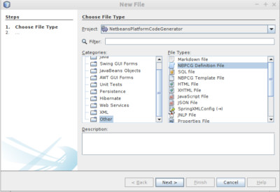

The Netbeans Platform Application Code generator is a Netbeans plug-in which creates a set of artifacts to speed up creation of a NetBeans Platform Application. These artifacts can include:
- Database creation scripts
- Other utility scripts
- Entity classes and their associated Entity Managers
- Node class for all entities
- Explorer Views for all entities
- Editors for all entities
The generation of these artifacts is controlled by a single NBPCG script which describes the necessary build details, entities details and also the node relationships.
Best practise would be to create a separate Netbeans module into which the NBPCG script is placed and all the artifacts are generated. However it is possible to incorporate the NBPCG script in an existing module and generate the artifacts within the module. The only restriction in this case is that the generated code must be created within packages in which no other classes have been manually created, as all files in NBPCG referenced packages are deleted prior to code generation. It is also possible for a script to generate it’s code across multiple modules (using the build directive), but in this case all the referenced projects must be opened in the Netbeans IDE in order that the script will work.
The NBPCG script
The NBPCG script is an XML document. A template is available - using the New… entry, the template can be selected from the other category with file type NBPCG Definition file

The xml consists of a top level element ( nbpcg ). Details of the xml document is outlined in the following section:
The nbpcg element
The top level element of the nbpcg script document.
| Type | Name | Value | Required |
|---|---|---|---|
| Attribute | name | the name of the script | yes |
| Child Element | build | one | |
| Child Element | node | one or more | |
| Child Element | databases | one or more |
The build element
Defines the build information - artifact selection, projects and packages etc.
| Type | Name | Value | Required |
|---|---|---|---|
| Attribute | viewerrole | the viewerroles for this application (comma separated) | yes |
| Attribute | copyright | the copyright key information year(s) and name / email - this will be added to every licence header placed in a generated file | yes |
| Child Element | project | one or more |
The project element
Defines the project information.
| Type | Name | Value | Required |
|---|---|---|---|
| Attribute | name | the project name | yes |
| Attribute | log | the log key to be used in generated files | yes |
| Attribute | license | the license header to be added to generated files - one of gpl30 or lgpl21 - default is gpl30 | optional |
| Child Element | generate | one or more |
The generate element
Requests the generation of code or resource files for various types of entities.
| Type | Name | Value | Required |
|---|---|---|---|
| Attribute | type | the type of code artifacts to be generated - one of data, node, nodeviewer, nodeeditor, remotedb, mysqldatabase or jsondatabase | yes |
| Attribute | package | the package name to be used for all artifacts generated by this request | yes |
The node element
Defines the nodes required and their interrelationships.
| Type | Name | Value | Required |
|---|---|---|---|
| Attribute | name | the node name | yes |
| Attribute | view | the types of view required - one of both, icon, tree, none - default is tree | optional |
| Attribute | viewers | optional | |
| Attribute | dbname | the database name | optional |
| Attribute | rootlabel | optional | |
| Attribute | rooticon | the root node icon name | optional |
| Attribute | icon | the node icon name | optional |
| Attribute | label | optional | |
| Attribute | orderable | set to yes if nodes are allowed to be orderable (by drag and drop) - default is no | optional |
| Attribute | nullallowed | set to yes if null value is allowed | optional |
| Attribute | fkey | set to no if foreign key is not utilised - default is yes | optional |
| Attribute | displaynameformat | format for the node’s display name | optional |
| Attribute | displaytitleformat | format for the node’s display title | optional |
| Attribute | sortformat | format for the node’s sort string - also implies sortable | optional |
| Attribute | min | minimum number of this node type (as a childnode) | optional |
| Attribute | max | maximum number of this node type (as a childnode) | optional |
| Child Element | node | child nodes of this node | zero or more |
The databases element
Collection of all database definitions.
| Type | Name | Value | Required |
|---|---|---|---|
| Child Element | database | one or more |
The database element
Definition of a database object.
| Type | Name | Value | Required |
|---|---|---|---|
| Attribute | name | the logical name of this database | yes |
| Attribute | dbname | the database name of this database - default is attribute name | optional |
| Attribute | pkey | database key type - one of idauto | optional |
| Attribute | extrafields | additional standard fields to add - one of usertimestamp | optional |
| Attribute | usepackage | ?? | optional |
| Child Element | table | one or more |
The table element
Definition of a database table object.
| Type | Name | Value | Required |
|---|---|---|---|
| Attribute | name | entity name | yes |
| Attribute | dbname | the database name of this table - default is attribute name | optional |
| Attribute | pkey | database key type - one of idauto | optional |
| Attribute | extrafields | additional standard fields to add - one of usertimestamp | optional |
| Child Element | field | zero or more | |
| Child Element | insertentity | zero or more |
The field element
Definition of a database table field (column) object.
| Type | Name | Value | Required |
|---|---|---|---|
| Attribute | pkey | yes if this field is the primary key | no |
| Attribute | name | field name | yes |
| Attribute | dbname | the table column name - defaults to attribute name | optional |
| Attribute | index | define the indexing for this field - one of unique or yes - default is no | optional |
| Attribute | unique | define the uniqueness of this field - one of yes - default is no | optional |
| Attribute | type | data type of the field one of boolean, long, int, date, datetime, enum, password or reference - default is string | optional |
| Attribute | nullallowed | are null values allowed? - one of yes - default is no | optional |
| Attribute | label | optional | |
| Attribute | references | optional | |
| Attribute | fkey | set to no if foreign key is not utilised - default is yes | optional |
| Attribute | values | set of enum values (comma separated) | optional |
| Attribute | min | min length of string entered, min value of number entered | optional |
| Attribute | max | max length of string entered, max value of number entered | optional |
| Attribute | future | set to yes if date or datetime entered must be in future | optional |
| Attribute | past | set to yes if date or datetime entered must be in past | optional |
| Attribute | passwordsupport | package name containing the helper methods for encoding and password testing | optional |
| Attribute | entryfield | the field name used for a password entry | optional |
| Attribute | passwordstrength | the require password strength - one of weak, strong, verystrong - default is none | optional |
The insertentity element
Definition of an data row to be inserted into the database table object.
| Type | Name | Value | Required |
|---|---|---|---|
| Child Element | insertfield | zero or more |
The insertfield element
Definition of an field to be inserted into the database table object.
| Type | Name | Value | Required |
|---|---|---|---|
| Attribute | name | field name | yes |
| Attribute | value | field value | yes |
Setting up a Maven project
- In Projects View, Add a folder named
nbpcgunderOther Sources. - Place the nbpcg script file (
script.xml) in thenbpcgnode

Setting up an ANT project
- In Files view, Add a folder name
nbpcg-filesunder the project root. - In Project view, Place the nbpcg script file (
script.xml) in theNBPCG Filenode.
Executing the NBPCG script
The NBPCG script can be executed by actions on the popup menu on:
- The Project node

- The NBPCG script file

Executing the script will open a new tab in the output window. Progress and errors will be reported in that tab.

Dependency Information for NBPCG generated Modules
NBPCG does not currently setup dependencies for the generated modules (either on NBPCG support libraries or Netbean Platform modules). The following documentation details the dependencies that exist and should be added to the various generated modules.
| Datamodel | NodeModel | NodeViewer | NodeEditor | |
|---|---|---|---|---|
| NetBeans Platform | ||||
| Explorer & Property Sheet API | x | x | ||
| Lookup API | x | x | x | |
| Nodes API | x | x | x | |
| UI Utilities API | x | x | ||
| Utilities API | x | x | x | |
| Window System API | x | x | ||
| NBPCG-Library | ||||
| MySQL | * | |||
| NBPCG Data Support Lib | x | x | x | x |
| NBPCG Form Support Lib | x | |||
| NBPCG Node Support Lib | x | x | x | |
| NBPCG Support Lib | x | x | x | x |
| NBPCG TopComponent Support Lib | x | x | ||
| GENERATED MODULES | ||||
| XX DataModel | x | x | x | |
| XX NodeModel | x | x | ||
| XX NodeEditor | x | |||
| If you are using table aliases to access other tables then you will need to add addition dependencies to those modules | ||||
| ALIAS MODULES | ||||
| XX DataModel | x | x | x | x |